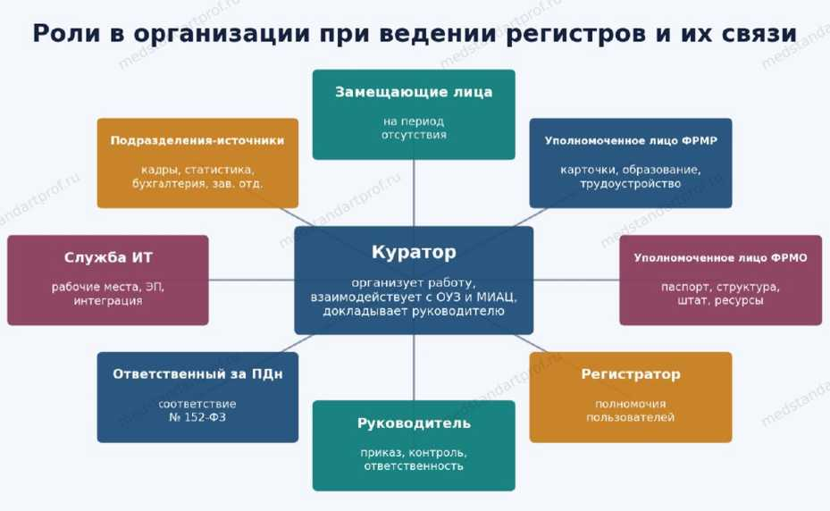
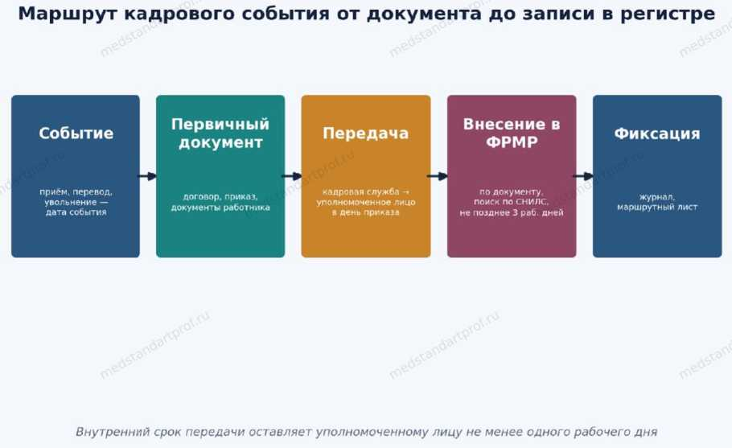
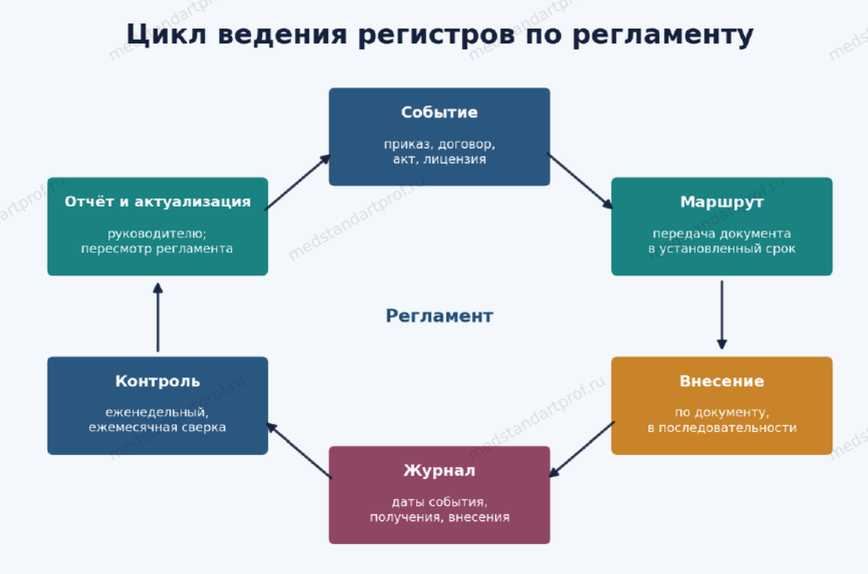
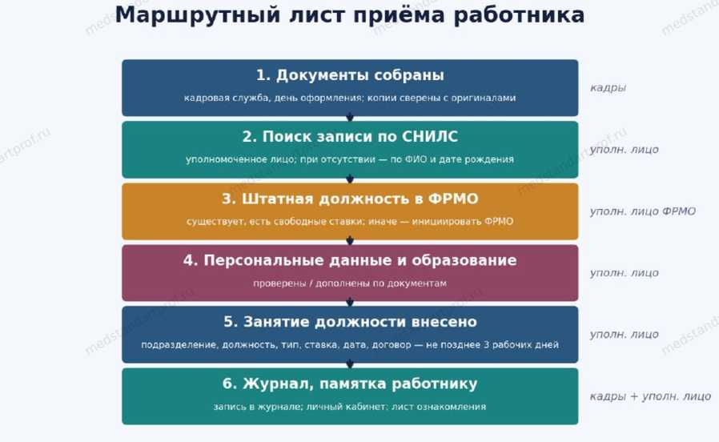
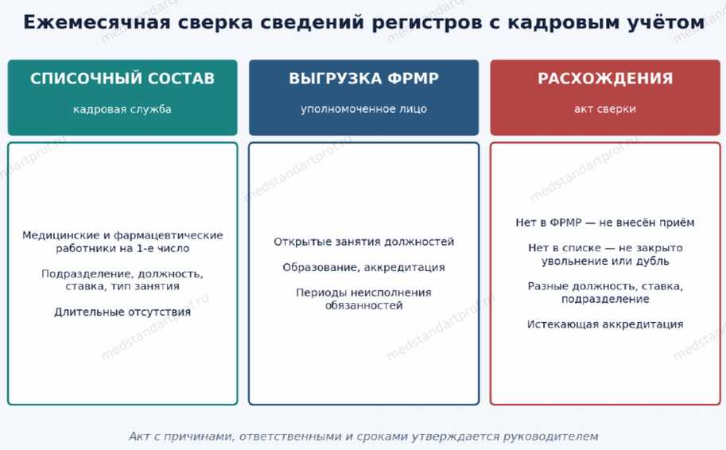

Большинство нарушений при ведении регистров имеет организационную, а не техническую природу: сведения не внесены в срок, потому что уполномоченное лицо не знало о событии; внесены неверно, потому что не было первичного документа; не внесены вовсе, потому что ответственный уволился, а нового не назначили. Первый шаг к устранению этих причин — приказ руководителя, который назначает ответственных, распределяет между ними функции и закрепляет обязанности подразделений-источников.
Цель лекции — определить состав ролей, необходимых для ведения регистров, требования к уполномоченным лицам и содержание приказа о назначении ответственных, а также построить матрицу ответственности для организаций разного размера.
Порядок № 708н использует понятие «уполномоченные лица» — лица, уполномоченные руководителем организации на внесение основных сведений в федеральный регистр, сведения о которых включены в заявку на регистрацию организации в ФРМО (пункт 10). Из этого следуют три требования:
1. Уполномоченные лица назначаются руководителем распорядительным документом (приказом).
2. Сведения об уполномоченных лицах передаются оператору единой системы — при регистрации организации и при каждом изменении состава (через заявки на предоставление и отзыв полномочий).
3. Контроль за уполномоченными лицами осуществляет руководитель (пункты 16, 24), следовательно, приказ должен предусматривать форму такого контроля.
Положение о единой системе и руководства пользователя дополнительно предусматривают роль лица, управляющего доступом пользователей организации к подсистемам (в личном кабинете участника ЕГИСЗ — «Регистратор»). Эту роль выполняет руководитель либо лицо, действующее по машиночитаемой доверенности.
Для ведения регистров в организации необходимы следующие роли. В малой организации несколько ролей может совмещать один работник; в крупной каждая роль закрепляется за отдельными работниками или подразделениями.
|
Роль |
Функции |
Кто выполняет (типовой вариант) |
|
Руководитель организации |
Утверждает приказ и регламент, несёт ответственность за достоверность сведений, подписывает заявки на доступ, контролирует уполномоченных лиц |
Главный врач, директор |
|
Куратор (ответственный за ЕГИСЗ) |
Организует работу, взаимодействует с органом управления здравоохранением и региональным центром, отслеживает изменения требований, докладывает руководителю |
Заместитель руководителя по медицинской части или по организационно-методической работе |
|
Регистратор (управление доступом) |
Подаёт заявки на предоставление и отзыв полномочий пользователей в личном кабинете участника ЕГИСЗ |
Руководитель или лицо с машиночитаемой доверенностью; технически — служба информационных технологий |
|
Уполномоченное лицо по ФРМО |
Вносит и актуализирует сведения об организации: паспорт, лицензии, здания, подразделения, штатное расписание, оборудование, койки,транспорт |
Специалист организационно-методического отдела, медицинский статистик, специалист по кадрам (штатное расписание) |
|
Уполномоченное лицо по ФРМР |
Вносит и актуализирует сведения о работниках: карточки, образование, трудоустройство, кадровые события |
Специалист по кадрам |
|
Замещающее уполномоченное лицо |
Выполняет функции уполномоченного лица в период его отсутствия |
Второй специалист по кадрам, куратор |
|
Подразделения-источники |
Своевременно передают уполномоченным лицам первичные документы и сведения об изменениях |
Кадровая служба, руководители подразделений, материально ответственные лица, юридическая служба (лицензии), бухгалтерия (оборудование) |
|
Служба информационных технологий |
Обеспечивает рабочие места, электронную подпись, защищённый канал, взаимодействие с технической поддержкой по техническим вопросам |
Штатный специалист или организация по договору |
|
Ответственный за защиту персональных данных |
Обеспечивает соответствие обработки данных требованиям законодательства |
Назначается в соответствии со статьёй 18.1 Федерального закона № 152-ФЗ |

Рисунок 1. Роли в организации при ведении регистров и их связи
Нормативные акты не устанавливают квалификационных требований к уполномоченным лицам, однако практика показывает, что эффективно выполнять функции может работник, который:
• имеет доступ к первичным документам (для ФРМР — работник кадровой службы; для ФРМО — работник, ведущий учёт структуры и ресурсов);
• знает номенклатуры должностей и специальностей, структуру организации, порядок кадрового делопроизводства;
• владеет навыками работы с веб-приложениями и электронной подписью;
• прошёл обучение по работе с регистрами (руководства пользователя, обучающие материалы оператора, настоящий курс).
Уполномоченное лицо должно иметь подтверждённую учётную запись физического лица в ЕСИА. Для ряда действий (подписание заявок, работа в личном кабинете участника) требуется усиленная квалифицированная электронная подпись; для внесения сведений в регистры через веб-интерфейс подпись, как правило, не требуется. Порядок получения доступа рассматривается в модуле 4.
Приказ о назначении не заменяет должностную инструкцию. Для привлечения работника к дисциплинарной ответственности за неисполнение обязанностей они должны быть включены в его должностную инструкцию или трудовой договор (дополнительное соглашение). Формулировка: «Вносит и актуализирует сведения в федеральном регистре медицинских и фармацевтических работников в порядке и сроки, установленные приказом Минздрава России от 28.10.2022 № 708н и регламентом организации». Возложение дополнительных обязанностей оформляется с соблюдением статей 60.2 и 151 Трудового кодекса (доплата за увеличение объёма работы), если обязанности выходят за пределы трудовой функции.
Приказ о назначении ответственных за ведение регистров содержит:
1. Преамбулу — ссылки на статьи 91.1, 92, 93 Федерального закона № 323-ФЗ, постановление № 140, постановление № 852, приказ № 708н.
2. Назначение куратора — ответственного за организацию работы с единой системой в целом.
3. Назначение уполномоченных лиц — отдельно по ФРМО и ФРМР, с указанием фамилии, должности, состава разделов регистра, за которые лицо отвечает.
4. Назначение замещающих лиц — на период отсутствия основных.
5. Назначение регистратора — лица, управляющего доступом (при необходимости — с указанием на выдачу машиночитаемой доверенности).
6. Обязанности подразделений-источников — перечень событий, о которых подразделения обязаны сообщать, и внутренние сроки передачи документов.
7. Утверждение регламента — регламент ведения регистров утверждается этим же приказом или отдельным.
8. Порядок контроля — периодичность отчётности уполномоченных лиц перед куратором и руководителем (рекомендуется ежемесячно), периодичность сверок.
9. Поручение службе информационных технологий — обеспечение рабочих мест, электронной подписи, взаимодействие с технической поддержкой.
10. Ознакомление — лист ознакомления всех упомянутых лиц под подпись.
• Назначен один ответственный «за ЕГИСЗ» без разделения по регистрам и без замещения — при его отсутствии сведения не вносятся.
• Назначены только уполномоченные лица без обязанностей подразделений-источников — уполномоченное лицо не получает документы в срок.
• Приказ ссылается на утративший силу приказ № 1159н.
• Приказ не предусматривает контроль — руководитель не может подтвердить его осуществление при проверке.
• Приказ не актуализируется при кадровых изменениях — в регистре полномочия числятся за уволенными.
Шаблон приказа включён в комплект документов курса (Шаблон 1).
Матрица ответственности закрепляет за каждым событием и разделом регистра четыре типа участия: И — исполняет (вносит сведения), П — предоставляет первичные документы, К — контролирует, С — согласует (при необходимости). Для каждого события должен быть ровно один исполнитель.
5.1. Малая организация (до 50 работников)
|
Событие / раздел |
Руководитель |
Специалист по кадрам |
Старшая медицинская сестра |
ИТ (по договору) |
|
Паспорт организации, лицензии (ФРМО) |
К, С |
И |
||
|
Здания, подразделения (ФРМО) |
К, С |
И |
П |
— |
|
Штатное расписание (ФРМО) |
К |
И |
— |
— |
|
Оборудование, койки (ФРМО) |
К |
И |
п |
— |
|
Приём, перевод, увольнение (ФРМР) |
К |
И |
||
|
Образование, аккредитация (ФРМР) |
К |
И |
П (сбор документов) |
— |
|
Доступ пользователей |
И (регистратор) |
П |
— |
И (техническая часть) |
5.2. Средняя организация (50-300 работников)
|
Событие / раздел |
Руководитель |
Куратор (зам. руководителя) |
Отдел кадров |
Оргметодотдел / статистик |
Зав. подразделениями |
ит-служба |
|
Паспорт организации, лицензии |
К |
С |
— |
И |
— |
— |
|
Здания, подразделения |
К |
С |
— |
И |
п |
— |
|
Штатное расписание |
К |
С |
и |
— |
— |
— |
|
Оборудование, койки, транспорт |
к |
с |
— |
и |
п |
— |
|
Приём, перевод, увольнение |
к |
к |
и |
— |
П (табель, факт) |
— |
|
Образование, аккредитация |
к |
к |
и |
П |
||
|
Доступ пользователей |
с |
И (по доверенности) |
п |
— |
— |
и |
|
Сверки, отчёт руководителю |
к |
И |
п |
п |
В крупной организации уполномоченные лица по ФРМР назначаются по нескольким работникам отдела кадров с разделением по подразделениям или по алфавиту, по ФРМО — работники организационно-методического отдела с разделением по разделам (структура и здания; штатное расписание; оборудование и койки). Обязательны выделенный куратор, ведущий сводный журнал, и ежемесячная внутренняя сверка. Для филиалов назначаются уполномоченные лица в каждом филиале с подчинением куратору головной организации.
|
Событие / раздел |
Руководитель |
Куратор |
Отдел кадров |
Оргметод-отдел |
Зав. подразделениями |
ИТ-служба |
|
Паспорт, лицензии |
к |
с |
— |
и |
— |
— |
|
Здания, подразделения |
к |
с |
— |
и |
п |
— |
|
Штатное расписание |
к |
с |
и |
— |
— |
— |
|
Оборудование, койки |
к |
с |
— |
и |
п |
— |
|
Приём, перевод, увольнение |
к |
к |
и |
— |
п |
— |
|
Образование, аккредитация |
к |
к |
и |
— |
п |
— |
|
Доступ пользователей |
с |
и |
п |
— |
— |
и |
|
Сверки,отчёт |
к |
и |
п |
п |
— |
— |
И — исполняет, П — предоставляет документы, К — контролирует, С — согласует; у каждого события один исполнитель
Смена уполномоченного лица — момент наибольшего риска потери контроля над регистром. Приказом о назначении или регламентом устанавливается порядок передачи дел:
1. Не позднее чем за пять рабочих дней до увольнения (перевода) уполномоченное лицо завершает внесение всех сведений по событиям, документы по которым получены, и составляет перечень незавершённых действий.
2. Куратор организует подачу заявки на отзыв полномочий увольняющегося и предоставление полномочий новому лицу — так, чтобы новый доступ был получен до прекращения старого.
3. Передаются: журнал внесения сведений, перечень незавершённых действий, перечень открытых обращений в техническую поддержку, логины и адреса сервисов (без паролей — новое лицо использует собственную учётную запись), инструкции и памятки.
4. Составляется акт приёма-передачи, утверждаемый куратором.
5. Новое уполномоченное лицо в течение первого месяца проводит сверку сведений регистра с документами по чек-листам курса.
Ведение регистров требует не одного «ответственного за ЕГИСЗ», а системы ролей: руководителя, куратора, регистратора, уполномоченных лиц по каждому регистру с замещением, подразделений-источников, службы информационных технологий и ответственного за персональные данные. Роли закрепляются приказом с обязательным ознакомлением, обязанности уполномоченных лиц включаются в должностные инструкции, а распределение участия по событиям фиксируется матрицей ответственности, в которой у каждого события один исполнитель. Особое внимание уделяется порядку передачи дел при смене ответственного.
1. Приказ Минздрава России от 28.10.2022 № 708н «Об утверждении порядка ведения персонифицированного учета...», пункты 10, 14, 16, 24.
2. Постановление Правительства Российской Федерации от 09.02.2022 № 140 «О единой государственной информационной системе в сфере здравоохранения» (с последующими изменениями и дополнениями).
3. Трудовой кодекс Российской Федерации (с последующими изменениями и дополнениями), статьи 60.2, 151, 192, 193.
4. Федеральный закон от 27.07.2006 № 152-ФЗ «О персональных данных» (с последующими изменениями и дополнениями), статья 18.1.
5. Федеральный закон от 06.04.2011 № 63-ФЗ «Об электронной подписи» (с последующими изменениями и дополнениями), статья 17.2 (машиночитаемые доверенности).
6. Руководства пользователя ФРМО и ФРМР, руководство пользователя личного кабинета участника ЕГИСЗ. — URL: portal.egisz.rosminzdrav.ru.
Приказ отвечает на вопрос «кто», регламент — на вопросы «что, когда и как». Регламент ведения регистров — локальный нормативный акт, который переводит требования Порядка № 708н и Положения о единой системе в конкретные действия работников организации с внутренними сроками, маршрутами документов и формами контроля. Без регламента трёхдневный срок внесения сведений остаётся декларацией: уполномоченное лицо не может внести сведения о событии, о котором не знает.
Цель лекции — определить структуру и содержание регламента ведения ФРМО и ФРМР, установить перечень событий-триггеров, внутренние сроки и маршруты передачи сведений, а также порядок контроля и актуализации самого регламента.
Регламент ведения регистров — локальный нормативный акт организации, принимаемый в соответствии со статьёй 8 Трудового кодекса Российской Федерации, обязательный для всех работников, чьи обязанности в нём закреплены. Регламент утверждается приказом руководителя, вводится в действие с определённой даты; работники, упомянутые в регламенте, знакомятся с ним под подпись.
Регламент решает четыре задачи:
1. Обнаружение события — определяет, кто и как узнаёт о событии, требующем внесения сведений.
2. Маршрут — определяет, каким документом и в какой срок сведения о событии передаются уполномоченному лицу.
3. Внесение — определяет, в какой срок и на основании чего уполномоченное лицо вносит сведения, как фиксирует факт внесения.
4. Контроль — определяет сверки, отчётность и действия при выявлении расхождений.
2. Структура регламента
Рекомендуемая структура регламента:
|
Раздел |
Содержание |
|
1. Общие положения |
Назначение, нормативные основания, область применения, термины |
|
2. Ответственные лица |
Ссылка на приказ о назначении, перечень ролей и их функций |
|
3. События и маршруты |
Перечень событий-триггеров по ФРМО и ФРМР, первичные документы, подразделение-источник, внутренний срок передачи, уполномоченное лицо, нормативный срок внесения |
|
4. Порядок внесения сведений |
Основания, порядок работы с первичными документами, последовательность заполнения разделов, запрет внесения «со слов», действия при технических ошибках |
|
5. Журнал внесения сведений |
Форма журнала, порядок ведения, хранение |
|
6. Контроль и сверки |
Периодичность внутренних сверок, участие в региональных сверках, отработка замечаний, отчёт руководителю |
|
7. Взаимодействие с технической поддержкой и органом управления здравоохранением |
Порядок обращений, регистрация обращений, контроль ответов |
|
8. Доступ пользователей |
Порядок предоставления и отзыва полномочий, действия при увольнении, требования информационной безопасности |
|
9. Актуализация регламента |
Порядок пересмотра при изменении нормативных актов и интерфейса регистров |
|
Приложения |
Матрица ответственности, форма журнала, маршрутный лист кадрового события, чек-листы, перечень нормативных актов |
Шаблон регламента включён в комплект документов курса (Шаблон 2).
3. События-триггеры
3.1. События по ФРМО
|
Событие |
Первичный документ |
Источник |
Внутренний срок передачи |
Нормативный срок внесения |
|
Государственная регистрация изменений (наименование, адрес, руководитель, ОКВЭД) |
Лист записи ЕГРЮЛ, приказ |
Юридическая служба |
Следующий рабочий день после получения документа |
Срок по Положению о единой системе |
|
Получение, переоформление, прекращение лицензии |
Выписка из реестра лицензий, приказ лицензирующего органа |
Юридическая служба, куратор |
Следующий рабочий день |
Срок по Положению |
|
Создание, реорганизация, переименование, ликвидация подразделения |
Приказ, изменение штатного расписания |
Кадровая служба, куратор |
Следующий рабочий день после подписания приказа |
Срок по Положению |
|
Изменение штатного расписания |
Приказ об утверждении (изменении) штатного расписания |
Кадровая служба |
Следующий рабочий день |
Срок по Положению |
|
Ввод, аренда, вывод здания; изменение характеристик |
Договор, акт, техническая документация |
Административно-хозяйственная служба |
Три рабочих дня |
Срок по Положению |
|
Поступление, перемещение, списание оборудования |
Акт ввода в эксплуатацию, накладная, акт списания, приказ о перемещении |
Материально ответственное лицо, бухгалтерия |
Три рабочих дня |
Срок по Положению |
|
Изменение коечного фонда |
Приказ об изменении коечного фонда |
Заместитель по медицинской части |
Следующий рабочий день |
Срок по Положению |
|
Изменение режима работы, участков, прикреплённого населения |
Приказ |
Заместитель по медицинской части |
Три рабочих дня |
Срок по Положению |
|
Поступление, списание санитарного транспорта |
Паспорт транспортного средства, акт |
Административно-хозяйственная служба |
Три рабочих дня |
Срок по Положению |
3.2. События по ФРМР
|
Событие |
Первичный документ |
Источник |
Внутренний срок передачи |
Нормативный срок внесения |
|
Приём на работу (основное место, совместительство) |
Трудовой договор, приказ о приёме, документы об образовании, СНИЛС, паспорт |
Кадровая служба |
В день издания приказа |
Не позднее трёх рабочих дней со дня заключения договора |
|
Перевод, изменение должности, ставки, подразделения |
Дополнительное соглашение, приказ о переводе |
Кадровая служба |
В день издания приказа |
Три рабочих дня |
|
Совмещение, расширение зон обслуживания (если отражается в регистре) |
Приказ |
Кадровая служба |
В день издания приказа |
Три рабочих дня |
|
Отпуск по беременности и родам, по уходу за ребёнком, иное длительное отсутствие |
Приказ |
Кадровая служба |
В день издания приказа |
Три рабочих дня |
|
Увольнение |
Приказ о прекращении трудового договора |
Кадровая служба |
В день издания приказа |
Три рабочих дня |
|
Изменение персональных данных (фамилия, паспорт, гражданство, адрес) |
Заявление работника с документом |
Кадровая служба |
Следующий рабочий день |
Три рабочих дня |
|
Получение документа об образовании, повышении квалификации, переподготовке |
Копия документа, представленная работником |
Кадровая служба, работник |
Следующий рабочий день после представления |
Три рабочих дня |
|
Аккредитация специалиста |
Поступает автоматически; выписка представляется работником для сверки |
Автоматически, два рабочих дня |
||
|
Присвоение квалификационной категории |
Приказ органа, присвоившего категорию, копия |
Работник, кадровая служба |
Следующий рабочий день |
Три рабочих дня |
|
Обращение работника о несоответствии сведений |
Заявление с подтверждающим документом |
Работник |
Регистрируется в день поступления |
Три рабочих дня |
Внутренний срок передачи документов устанавливается так, чтобы у уполномоченного лица оставалось не менее одного рабочего дня на внесение сведений. Для событий ФРМР с нормативным сроком три рабочих дня внутренний срок передачи — день издания приказа. Регламент должен прямо устанавливать, что течение нормативного срока начинается со дня события (заключения договора, получения сведений), а не со дня передачи документа уполномоченному лицу: задержка внутри организации не продлевает нормативный срок.

Рисунок 1. Маршрут кадрового события от документа до записи в регистре
Регламент устанавливает правила, обязательные для уполномоченных лиц:
1. Основание. Сведения вносятся только на основании первичных документов: приказов, договоров, документов об образовании, лицензий, актов. Внесение по устному сообщению, по электронному письму без вложения документа, «по памяти» не допускается. Если документ не получен, уполномоченное лицо запрашивает его у подразделения-источника с фиксацией запроса.
2. Сверка с документом. Каждое поле заполняется в точном соответствии с документом: должность — по приказу и штатному расписанию, ставка — по трудовому договору, дата — по приказу. Расхождения между документами (например, должность в приказе не совпадает со штатным расписанием) — основание для приостановки внесения и запроса в кадровую службу, а не для выбора «наиболее похожего» варианта.
3. Последовательность. Разделы ФРМО заполняются в порядке: паспорт —► лицензии —> здания —> подразделения —► штатное расписание ресурсы. Сведения о трудоустройстве в ФРМР вносятся после создания штатной должности в ФРМО.
4. Поиск перед созданием. Перед созданием карточки работника в ФРМР выполняется поиск существующей записи по СНИЛС; при обнаружении — используется существующая запись. Создание дубликата запрещается.
5. Фиксация. Факт внесения фиксируется в журнале (раздел 5) с указанием даты события, даты получения документа, даты внесения и, при необходимости, номера обращения в техническую поддержку.
6. Технические ошибки. При невозможности внести сведения из-за ошибки системы или отсутствия значения в справочнике уполномоченное лицо в тот же день направляет обращение в техническую поддержку, регистрирует его в журнале и информирует куратора. Обращение, направленное в пределах нормативного срока, является доказательством добросовестности.
7. Запрет избыточных сведений. В поля комментариев вносятся только сведения, предусмотренные руководством пользователя; персональные данные сверх установленного состава не вносятся.
Регламент устанавливает трёхуровневую систему контроля:
Текущий контроль — уполномоченное лицо еженедельно сверяет журнал с перечнем приказов кадровой службы и приказов по организации за неделю, выявляя события, документы по которым не поступили.
Ежемесячная сверка — куратор совместно с уполномоченными лицами сверяет по чек-листам: список работников в ФРМР со списочным составом по данным кадрового учёта; штатное расписание ФРМО с действующим штатным расписанием; перечень подразделений с организационной структурой. Результат оформляется актом сверки с перечнем расхождений и сроками устранения; акт представляется руководителю.
Региональная сверка — при получении от органа управления здравоохранением или регионального центра перечня расхождений куратор регистрирует его, распределяет позиции между уполномоченными лицами, контролирует устранение в установленный срок и направляет ответ.
Ежегодная проверка — перед подготовкой годовой статистической отчётности (форма № 30) проводится полная сверка разделов ФРМО и ФРМР с данными отчётности.
Регламент определяет единый канал внешних коммуникаций:
• обращения в техническую поддержку направляются уполномоченными лицами через установленный оператором канал (портал или электронная почта) с обязательным указанием идентификатора организации, описанием проблемы, снимками экрана; каждое обращение регистрируется в журнале обращений с номером, датой и результатом;
• запросы органа управления здравоохранением и регионального центра принимает куратор, который распределяет их и контролирует исполнение;
• уведомления об изменениях требований (письма, новости портала) куратор доводит до уполномоченных лиц и при необходимости инициирует изменение регламента.
Регламент пересматривается:
• при изменении нормативных актов, на которые он ссылается, — в течение одного месяца со дня вступления изменений в силу;
• при изменении интерфейса регистров, затрагивающем маршруты или последовательность заполнения, — в течение одного месяца после публикации новой версии руководства пользователя;
• при изменении организационной структуры или состава ответственных — одновременно с изданием соответствующего приказа;
• планово — не реже одного раза в год.
Куратор не реже одного раза в квартал проверяет актуальность нормативных ссылок регламента по официальному интернет-порталу правовой информации и по порталу оперативного взаимодействия участников ЕГИСЗ; результат проверки фиксируется в журнале.

Рисунок 2. Цикл ведения регистров по регламенту
Регламент — рабочий инструмент, который превращает нормативные сроки в достижимые: он определяет события-триггеры, первичные документы, внутренние сроки передачи и маршруты, устанавливает правила внесения (только по документам, в установленной последовательности, с поиском перед созданием, с фиксацией в журнале) и трёхуровневый контроль. Ключевое положение регламента нормативный срок исчисляется со дня события, поэтому внутренние сроки передачи документов должны оставлять уполномоченному лицу запас времени. Регламент подлежит регулярной актуализации при изменениях нормативных актов и интерфейса регистров.
1. Трудовой кодекс Российской Федерации (с последующими изменениями и дополнениями), статьи 8, 22, 68.
2. Приказ Минздрава России от 28.10.2022 № 708н «Об утверждении порядка ведения персонифицированного учета...», пункты 10, 14, 17, 21-24.
3. Постановление Правительства Российской Федерации от 09.02.2022 № 140 «О единой государственной информационной системе в сфере здравоохранения» (с последующими изменениями и дополнениями), приложение № 1.
4. Постановление Правительства Российской Федерации от 01.06.2021 № 852 «О лицензировании медицинской деятельности...» (с последующими изменениями и дополнениями).
5. Руководства пользователя ФРМО и ФРМР. — URL: portal.egisz.rosminzdrav.ni.
6. Шаблоны документов курса: Шаблон 2 «Регламент ведения ФРМО и ФРМР», Шаблон 3 «Журнал внесения и актуализации сведений», Шаблон 4 «Маршрутный лист кадрового события».
Регламент задаёт правила; документооборот делает их исполнимыми и проверяемыми. В этой лекции рассматриваются рабочие формы, с помощью которых организация обеспечивает поступление сведений к уполномоченному лицу, фиксацию каждого действия в регистре и доказуемость соблюдения сроков: журнал внесения и актуализации сведений, маршрутный лист кадрового события, акты сверок, а также порядок взаимодействия кадровой службы, статистики, информационных технологий и бухгалтерии.
Цель лекции — освоить формы и процедуры документооборота, обеспечивающие своевременное, документально обоснованное и проверяемое ведение регистров.
Журнал — основной доказательный документ организации. Он подтверждает, когда организация узнала о событии, когда получила первичный документ, когда внесла сведения и с какими техническими препятствиями столкнулась. При проверке журнал позволяет показать, что нарушение срока (если оно есть) вызвано объективной причиной, а не бездействием.
Журнал ведётся в электронной форме (таблица с защитой от изменения ранее внесённых строк) либо на бумажном носителе. Рекомендуемые графы:
|
№ |
Дата события |
Событие |
Объект (работы ИК, подразделение, единица оборудования) |
Первичный документ (вид, номер / дата) |
Дата получения документа уполномоченным лицом |
Peгистр и раздел |
Дата внесения |
Кто в нёс |
Номер и дата обращения в техподдержку (при наличии) |
Дата устрапения |
Примечание |
Отдельные журналы ведутся по ФРМО и по ФРМР либо один общий с признаком регистра. При интеграционной передаче сведений из
медицинской информационной системы журнал может формироваться автоматически из журнала передачи, если он содержит перечисленные графы.
1. Запись вносится в день получения документа уполномоченным лицом, а не после внесения сведений в регистр: «открытая» запись без даты внесения — сигнал о невыполненной задаче.
2. Дата события заполняется по первичному документу (дата заключения договора, дата приказа), от неё исчисляется нормативный срок.
3. При техническом препятствии в графу вносится номер обращения в техническую поддержку; после устранения — дата.
4. Журнал хранится не менее пяти лет; срок может быть уточнён номенклатурой дел организации.
5. Еженедельно уполномоченное лицо проверяет наличие «открытых» записей и записей, по которым истекает срок.
Шаблон журнала включён в комплект документов курса (Шаблон 3).
Кадровые события — приём, перевод, увольнение — наиболее частые и наиболее рискованные с точки зрения сроков. Маршрутный лист — документ, сопровождающий кадровое событие от кадровой службы до записи в регистре и подтверждающий выполнение каждого шага. В организациях с электронным кадровым документооборотом маршрут реализуется как задача в системе; в остальных — как бумажный или электронный бланк.
Маршрутный лист содержит:
1. Сведения о работнике: фамилия, имя, отчество, СНИЛС.
2. Вид события и первичный документ.
3. Перечень документов, необходимых для внесения (для приёма: паспорт, СНИЛС, документы об образовании, сертификат или выписка об аккредитации, документы о квалификационной категории, трудовой договор, приказ).
4. Отметки о выполнении шагов с датами и подписями: документы собраны — документы переданы уполномоченному лицу — запись найдена (создана) в ФРМР — сведения о трудоустройстве внесены — работник уведомлён о внесении сведений и о личном кабинете.
5. Отметку о занесении в журнал.
Шаблон маршрутного листа включён в комплект (Шаблон 4).
2.3. Приём работника — пошаговый маршрут
|
Шаг |
Действие |
Исполнитель |
Срок |
|
1 |
При оформлении приёма запросить у работника документы по перечню, снять копии, сверить с оригиналами |
Специалист по кадрам |
День оформления |
|
2 |
Проверить наличие записи о работнике в ФРМР по СНИЛС (для аккредитованных специалистов запись должна существовать); при отсутствии — уточнить у работника сведения об аккредитации |
У полномоченное лицо по ФРМР |
День оформления или следующий рабочий день |
|
3 |
Убедиться, что в ФРМО существует штатная должность в нужном подразделении с незанятой ставкой; при отсутствии — инициировать внесение в ФРМО |
У полномоченное лицо по ФРМР совместно с уполномоченным по ФРМО |
До внесения сведений о трудоустройстве |
|
4 |
Внести (проверить) персональные данные и сведения об образовании, внести сведения о трудоустройстве |
У полномоченное лицо по ФРМР |
Не позднее трёх рабочих дней со дня заключения договора |
|
5 |
Зафиксировать внесение в журнале, закрыть маршрутный лист |
У полномоченное лицо по ФРМР |
В день внесения |
|
6 |
Выдать работнику памятку о личном кабинете медицинского работника, получить подпись в листе ознакомления об обработке персональных данных |
Специалист по кадрам |
При оформлении приёма |
|
Шаг |
Действие |
Исполнитель |
Срок |
|
1 |
Передать приказ о прекращении трудового договора уполномоченному лицу |
Специалист по кадрам |
День издания приказа |
|
2 |
Внести дату окончания трудоустройства и основание в ФРМР; при наличии у работника нескольких занятий должностей — закрыть все, относящиеся к прекращённому договору |
У полномоченное лицо по ФРМР |
Три рабочих дня со дня увольнения |
|
3 |
Если увольняемый являлся уполномоченным лицом или имел иные полномочия в единой системе — подать заявку на отзыв полномочий |
Регистратор |
День увольнения |
|
4 |
Зафиксировать в журнале |
У полномоченное лицо |
В день внесения |
Особый случай — увольнение работника-совместителя с сохранением основного места в той же организации: закрывается только занятие должности по совместительству.
Рисунок 1. Маршрутный лист приёма работника
Кадровая служба — главный источник сведений для ФРМР и источник штатного расписания для ФРМО. Обязанности кадровой службы по регламенту:
• при приёме собирать полный комплект документов и передавать их уполномоченному лицу в день оформления;
• вести штатное расписание в соответствии с номенклатурой должностей, чтобы наименования должностей могли быть выбраны в регистре;
• передавать приказы по личному составу уполномоченному лицу в день издания;
• ежемесячно предоставлять список работников (списочный состав) для сверки с ФРМР;
• принимать заявления работников об изменении персональных данных и передавать их с документами.
Если уполномоченное лицо по ФРМР — работник кадровой службы, взаимодействие сводится к внутренней процедуре, но правила фиксации в журнале сохраняются.

Статистик — как правило, уполномоченное лицо по ресурсным разделам ФРМО (структура, койки, оборудование) и главный «потребитель» данных регистров при подготовке отчётности. Обязанности:
• вести перечень подразделений и коечного фонда в соответствии с приказами и отражать изменения в ФРМО;
• перед сдачей формы № 30 и других форм проводить сверку показателей с регистрами;
• участвовать в ежемесячных сверках по ФРМО.
Бухгалтерия ведёт учёт основных средств, в том числе медицинского оборудования, а материально ответственные лица — его фактическое размещение. Для раздела «Медицинское оборудование» ФРМО регламент устанавливает обязанность передавать уполномоченному лицу акты ввода в эксплуатацию, перемещения и списания оборудования, подлежащего учёту в регистре, в трёхдневный срок. Перечень видов оборудования, подлежащих внесению, определяется справочником регистра.
Служба обеспечивает рабочие места уполномоченных лиц, средства электронной подписи, доступ к порталам, взаимодействие с технической поддержкой по техническим вопросам (недоступность портала, ошибки интеграции), а при интеграционном ведении — контроль передачи сведений из медицинской информационной системы и разбор ошибок форматно-логического контроля. Регламент разграничивает: содержательные вопросы (что внести, какое значение выбрать) решает уполномоченное лицо, технические — служба информационных технологий.
Передаёт сведения о государственной регистрации изменений, лицензиях, договорах аренды зданий; консультирует при спорах с работниками о сведениях регистра.
Кадровая служба формирует списочный состав медицинских и фармацевтических работников на первое число месяца с указанием должности, подразделения, ставки, вида занятости. Уполномоченное лицо формирует выгрузку из ФРМР (или сверяет по интерфейсу). Сопоставляются:
• работники, отсутствующие в ФРМР;
• работники, числящиеся в ФРМР, но уволенные;
• расхождения в должности, подразделении, ставке, виде занятости;
• работники без сведений об образовании или аккредитации;
• работники с истёкшими сроками действия сертификатов при отсутствии сведений об аккредитации.
Сопоставляются действующее штатное расписание и раздел «Штатное расписание» ФРМО (количество ставок по должностям и подразделениям), организационная структура и перечень подразделений, приказы о коечном фонде и раздел «Койки».
Результат оформляется актом с перечнем расхождений, причин, ответственных и сроков устранения. Акт подписывают куратор и уполномоченные лица, утверждает руководитель. Расхождения, вызванные техническими причинами, сопровождаются номерами обращений в техническую поддержку. Акты хранятся вместе с журналом.
Рисунок 2. Ежемесячная сверка сведений регистров с кадровым учётом
7

Куратор ежемесячно представляет руководителю краткий отчёт: число событий за месяц, число внесённых в срок и с нарушением срока (с причинами), число открытых обращений в техническую поддержку, результаты сверки, замечания органа управления здравоохранением и статус их отработки. Отчёт — документальное подтверждение осуществления руководителем контроля, предусмотренного Порядком № 708н.
Регламент предусматривает:
• первичное обучение вновь назначенного уполномоченного лица (руководства пользователя, настоящий курс, наставничество куратора);
• ознакомление работников кадровой службы и руководителей подразделений с их обязанностями по регламенту;
• памятки для подразделений-источников (какие события и какими документами сообщать);
• памятку для работников о личном кабинете медицинского работника и порядке обращения при обнаружении несоответствия.
Документы, связанные с ведением регистров, включаются в номенклатуру дел организации: приказы о назначении ответственных — постоянно (в составе приказов по основной деятельности); регламент — до замены новым; журналы, акты сверок, переписка с технической поддержкой и органом управления — не менее пяти лет; заявки на доступ и доверенности — в течение срока действия и не менее пяти лет после. Копии документов работников хранятся в личных делах в соответствии с правилами кадрового делопроизводства.
Документооборот ведения регистров строится вокруг трёх форм — журнала, маршрутного листа и акта сверки — и чётко распределённых обязанностей служб: кадровая служба обеспечивает документы и штатное расписание, статистика — структуру и ресурсы, бухгалтерия и материально ответственные лица — оборудование, служба информационных технологий — техническую сторону, юридическая служба — регистрационные и лицензионные сведения. Журнал подтверждает даты и причины, маршрутный лист обеспечивает полноту действий при кадровом событии, ежемесячная сверка выявляет расхождения до того, как их обнаружит проверяющий орган, а ежемесячный отчёт руководителю документирует осуществление контроля.
1. Приказ Минздрава России от 28.10.2022 № 708н «Об утверждении порядка ведения персонифицированного учета...», пункты 14, 16, 22-24.
2. Трудовой кодекс Российской Федерации (с последующими изменениями и дополнениями), статьи 65, 66.1, 68, 84.1, 86.
3. Приказ Росархива от 20.12.2019 № 236 «Об утверждении Перечня типовых управленческих архивных документов, образующихся в процессе деятельности государственных органов, органов местного самоуправления и организаций, с указанием сроков их хранения».
4. Приказ Росстата об утверждении формы федерального статистического наблюдения № 30 «Сведения о медицинской организации» (действующая редакция).
5. Руководства пользователя ФРМО и ФРМР. — URL: portal.egisz.rosminzdrav.ro.
6. Шаблоны документов курса: Шаблон 3 «Журнал внесения и актуализации сведений», Шаблон 4 «Маршрутный лист кадрового события»; чек-листы качества данных курса.
Практикум завершает организационный блок курса: обучающийся разрабатывает для своей (или учебной) организации комплект локальных документов — приказ о назначении ответственных, регламент ведения регистров, журнал и маршрутный лист. Работа ведётся по шаблонам курса с пошаговой адаптацией под структуру организации.
Цель практикума — подготовить проекты приказа и регламента, готовые к утверждению руководителем.
Форма выполнения — самостоятельная письменная работа по пошаговой инструкции с использованием шаблонов 1-4 из раздела «Шаблоны документов». Доступ к регистрам не требуется.
По численности работников и структуре организации выберите модель из лекции 3.1 (малая, средняя, крупная) и заполните матрицу ответственности: для каждого события — один исполнитель, лицо, предоставляющее документы, контролирующий.
Шаг 2. Определите персональный состав
Для каждой роли укажите фамилию, имя, отчество и должность работника. Проверьте:
• у каждого уполномоченного лица есть замещающее;
• уполномоченное лицо по ФРМР имеет доступ к первичным кадровым документам;
• регистратор — руководитель либо лицо, на которое будет оформлена машиночитаемая доверенность;
• уполномоченные лица включены в перечень лиц, допущенных к обработке персональных данных.
Шаг 3. Заполните шаблон приказа
Откройте Шаблон 1. Заполните преамбулу (сверьте реквизиты нормативных актов с лекцией 2.1 — ссылка на приказ № 1159н недопустима), пункты о назначении, обязанности подразделений-источников с внутренними сроками, порядок контроля, поручения службе информационных технологий, лист ознакомления.
• Указаны ли по каждому уполномоченному лицу регистр и разделы, за которые оно отвечает?
• Предусмотрено ли замещение?
• Установлены ли обязанности и сроки для кадровой службы, руководителей подразделений, материально ответственных лиц?
• Предусмотрен ли ежемесячный отчёт руководителю?
• Предусмотрено ли внесение обязанностей в должностные инструкции?
• Есть ли лист ознакомления?
Откройте Шаблон 2. В разделе «События и маршруты» удалите события, невозможные в вашей организации (например, коечный фонд для амбулаторной организации), и добавьте специфические (участки и прикреплённое население для поликлиники, передвижные комплексы, филиалы). Для каждого события проверьте первичный документ и источник по практикуму 1.
Шаг 6. Установите внутренние сроки
Для каждого события установите внутренний срок передачи документа уполномоченному лицу так, чтобы оставался запас не менее одного рабочего дня до истечения нормативного срока. Для кадровых событий — день издания приказа.
Шаг 7. Опишите порядок внесения
Проверьте, что раздел содержит семь правил из лекции 3.2: основание — только документ; сверка с документом; последовательность разделов; поиск перед созданием; фиксация в журнале; действия при технических ошибках; запрет избыточных сведений. При интеграционном ведении через медицинскую информационную систему добавьте порядок контроля передачи и разбора ошибок.
Шаг 8. Установите контроль
Заполните периодичность текущего контроля (еженедельно), ежемесячной сверки, участия в региональных сверках, ежегодной проверки перед статистической отчётностью. Укажите форму акта сверки и порядок его утверждения.
Укажите канал обращений в техническую поддержку, порядок регистрации обращений, лицо, принимающее запросы органа управления здравоохранением. В разделе о доступе укажите порядок подачи заявок, действия при увольнении (отзыв полномочий в день увольнения), требования информационной безопасности из лекции 2.3.
Шаг 10. Установите порядок актуализации регламента
Укажите сроки пересмотра при изменении нормативных актов, интерфейса, структуры организации; ежеквартальную проверку нормативных ссылок куратором.
Откройте Шаблон 3. Определите, ведётся ли один журнал или два (по ФРМО и ФРМР), форму ведения (электронная таблица с защитой, бумажный журнал), место хранения, ответственного за ведение. Внесите в журнал в качестве примера три записи по событиям текущего месяца.
Шаг 12. Настройте маршрутный лист
Откройте Шаблон 4. Адаптируйте перечень документов для приёма под категории работников организации (врачи, средний персонал, младший персонал, фармацевтические работники). Определите, кто заполняет каждую отметку.
Проверьте согласованность документов:
• роли в регламенте совпадают с приказом;
• события в регламенте совпадают с матрицей ответственности;
• формы журнала и маршрутного листа приложены к регламенту;
• нормативные ссылки во всех документах актуальны и единообразны;
• ни в одном документе нет ссылки на приказ № 1159н.
Результат — проекты приказа и регламента с приложениями (матрица ответственности, форма журнала, маршрутный лист), оформленные по шаблонам, без незаполненных полей, прошедшие проверку по контрольным спискам. Проекты сохраняются для использования в практикумах 4-10 и в практическом задании итоговой аттестации.
1. Лекции 3.1-3.3 настоящего курса.
2. Шаблоны документов курса: Шаблон 1 «Приказ о назначении ответственных», Шаблон 2 «Регламент ведения ФРМО и ФРМР», Шаблон 3 «Журнал внесения и актуализации сведений», Шаблон 4 «Маршрутный лист кадрового события».
3. Приказ Минздрава России от 28.10.2022 № 708н, пункты 10, 14, 16, 23, 24.